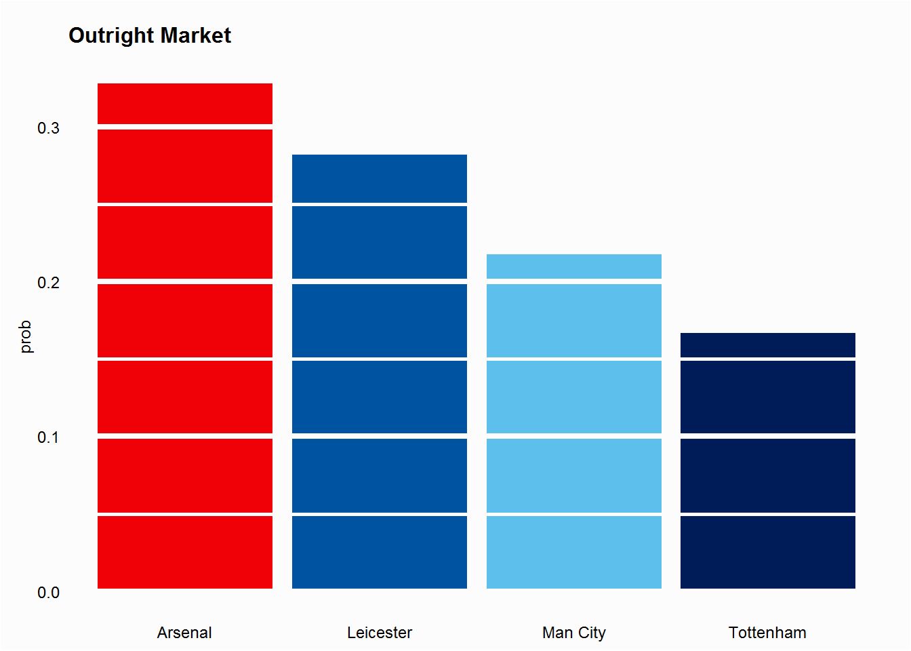
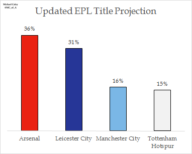
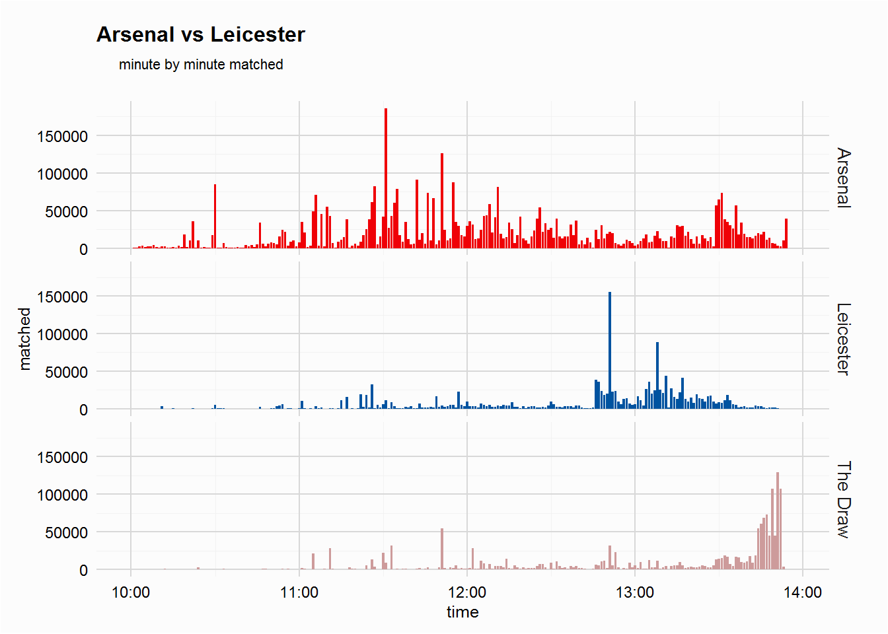
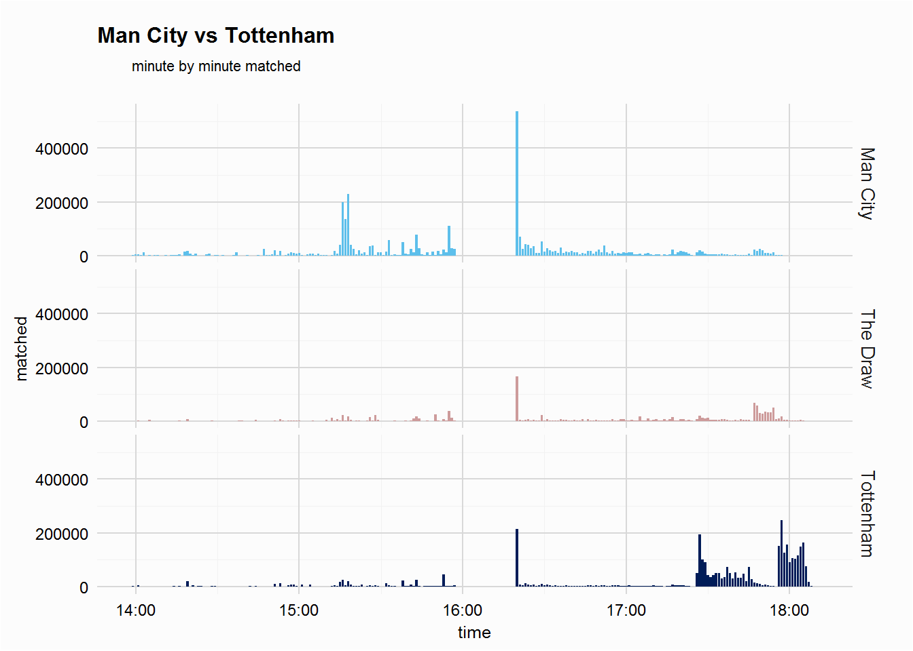
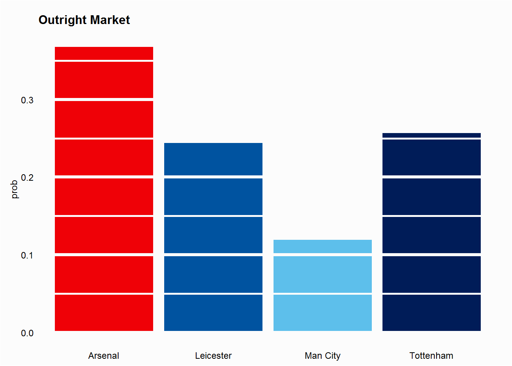

This is a follow up post to the cron jobs w/ betfaiR post, which walked through scheduling a task to periodically collect betfair data. The data collected came from 3 markets on 14/02/16, the early match between Arsenal and Leicester, the late match between Man City and Spurs, and the Premier League Outright market. This post will summarise and plot some of the data, given some of action, especially in the early game which saw Leicester take the lead, get a man sent off and then lose, we should see some interest movements not only in that market but the outright market too.
(there was a period, around 23minutes from 15:57 to 16:20, where the task was stopped as my laptop was running off its battery, not something I saw being an issue. If anyone would like the data used in this post get in touch via the email on my github page.)
The two plots below show the outright market from Betfair (left, at 10am on 14th Feb) compared to Michael Caley’s title projections (from Feb 7th). Betfair has it a little tighter than Michael, but not by much, and Michael’s projections are closer to Betfair than some models have the title race; Chad Murphy (soccermetric) wrote MOTSON [his model] has Arsenal as a 67% favorite on Feb 8th, while Christopher Long (octonion) tweeted on Feb 9th I have Leicester 62%, Tottenham 15%, Arsenal 9%, Man City 13%.


Caley in a piece for the Washington Post shared a plot which showed the ramifications of each of the 9 different possible combinations from the 2 huge games. Given the data collected we will see how these 4 title challengers chances changed over the course of a truly Super Sunday.
The early game saw league leaders Leicester travel to the Emirates fresh off a superb away performance at the Etihad. Arsenal were favourites going into the crucial game, starting the game at 1.69 (having been 1.79 at 10:00am), while Leicester started the game 5.5.
The plot to the right shows the implied probability over time, below that shows the Premier League outright market, while the plot below shows the amount matched over the previous minute.
The minute by minute matched plot (below) shows a huge spike for the minute prior to 11:31:01 when £186267.11 was traded on Arsenal at around 1.71 (approaching the price Arsenal started the match). A similar amount, £155148.84, was traded on Leicester during half time at 2.18.
The two plots to the right, showing implied probability for the match and outright markets unsurprisingly are closely correlated. The events of the match impacting the outright market, although liquidity in the outright market saw some instability are Arsenal equalised (around 13:30). The late Danny Wellbeck winner saw all change in both the match and outright markets, with Arsenal cementing favouritism for the title at around 2.56 (0.39), while Leicester drifted to around 4.6 (0.21).
After the early game, which ensured Leicester didn’t break from the pack (see Caley’s Washington Post piece for a sense of what might have been for the Foxes), the late kick-off saw one young side Spurs travel to an experienced City side with Aguero, Kompany, Toure and Silva all starting. This game was not without similar controversy.
Recall that data collection failed for about 23minutes from 15:57 to 16:20, so unforunately failed to catch the late drift of City. The plot below, which shows minute by minute matched also sees a huge spike, which is the amount matched over the missing period.
One of the more interesting things of note is the outright market, immediately after the early game Arsenal were backed in to around 2.56 (0.4), but by the time the late game kicked off back to 2.7, while City had been shortened slightly from around 4.7 to 4.3. (drift for the match, shorten for the title.)
The plot to the right shows the outright market at around 19:00, after both crucial games. Post match Arsenal are still favourites, the late winner cementing their favouritism, while Leicester’s chances took a hit - despite the claims of Chief Sports writer at the Telegraph claiming their chances were undiminished.
At the Etihad the winners were the winners and the losers the losers, Spurs becoming marginal second favourites, ahead of Leicester, to their North London rivals, both sitting on the same points.
The North London derby in a couple of weeks will be even more enticing as these two look set to lock horns down the stretch!
Greatest League in the World ;-)
